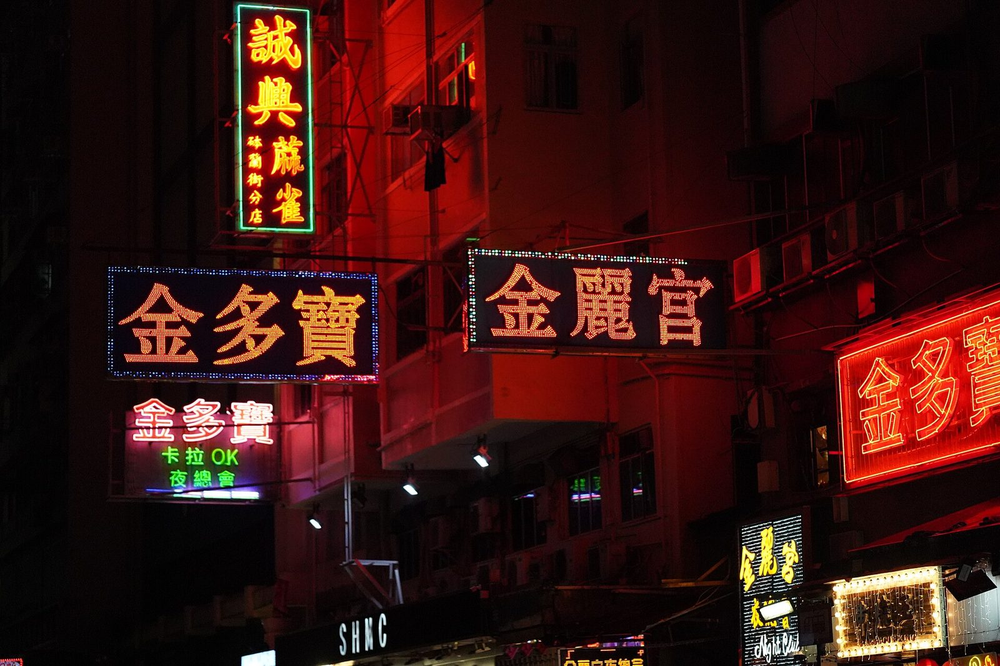

References / Photograph / 451
Neon and LED signs on Portland Street, Mong Kok
Hand-bent neon and LED-dot signs in Chinese characters glow red, yellow, and green against black building facades in Mong Kok, Hong Kong.
- Source
- Wikimedia Commons: LED and neon signs on Portland Street at night.jpg
- Creator
- Benlisquare
- Made
- 31 July 2025
- Style
- Cyberpunk (agent-proposed, not yet reviewed by a person)
- Moods
- Nocturnal, gritty, glowing
- Evidence
- Downloaded and inspected the Commons 1920 px rendition of the 6000 × 4000 px original. The description reads “An assortment of LED and neon shop signs on Portland Street in Mong Kok at night.”
- Reviewed
- Rights
- Open license, stored. License: CC-BY-SA-4.0. Rights policy

Context
Wikipedia: Ridley Scott envisioned the Los Angeles of Blade Runner as “Hong Kong on a very bad day”, and the city of Ghost in the Shell was based on Hong Kong. Cyberpunk.
The photograph is in the Commons categories “Neon signs in Portland Street, Hong Kong” and “Shop signs in Mong Kok”. Commons.
Observed
- The ground is black or deep red: unlit facades with air conditioners, pipes, and window frames, lit only by the signs.
- A tall vertical neon sign at upper left has orange-yellow characters inside a green neon outline.
- Two horizontal signs in the center have characters drawn in orange LED dots on dark blue panels, edged with rows of blue and white dots.
- A red neon sign at right, with large characters inside a red tube frame, casts red light over the building above it.
- A smaller sign at left has pink-white neon characters over green neon text, including “卡拉OK”.
- The halos around the tubes are soft and centered, with no offset.
Why it belongs
Here the grammar’s “glow, not shadow” is literal: each line is a light source, and its halo spreads evenly on all sides.
The green outline around the yellow vertical sign is the same device as a glowing hairline frame around a panel.
Borrow
Draw a frame as a single glowing line in a second color around text of a first color.
Build large characters from dots, as on LED signs, for a display face that reads as light.
Measured
Machine-extracted by tools/image-traits.py on . Full measurement.
- Mean chroma
- 0.16
- Palette
- #130607 53%
- #260709 14%
- #470a0a 5%
- #5b0a0c 4%
- #261718 3%
- #730a0a 3%
- #8d0a08 3%
- #c66849 2%

